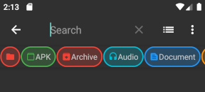

ZArchiver 用了三年，我发现当初装它的理由已经过时了
从安卓 9 一路用到安卓 14，三年里 ZArchiver 帮我装过几百个游戏 OBB、压过上千份存档。有些功能越用越顺手，有些坑是时间长了才暴露的——这篇聊聊长期使用下来的真实感受。
装 ZArchiver 那天我记不清了，大概是某个想玩的游戏数据包散在网盘里、系统文件管理器根本打不开的时候。说实话当初选它也没怎么挑——同类工具就那么几款，zarchiver官网上口碑最好，体积也小。从下载页拿的安装包，装上就用，一用就是三年。
越用越顺手的几件事
第一个要说的是错误码。一开始遇到解压失败，我总以为是包坏了，重下一遍还不行就骂作者。后来某次闲得无聊翻了zarchiver文档里的错误对照表——原来每一种报错都有明确的含义：Cannot find volume 是分卷丢了、Invalid password 是密码来源不对、Not enough disk space 是我忘了解压后体积会膨胀。知道这些以后，90% 的问题打开一看报错就知道该怎么处理，省了大量瞎猜的时间。
然后是 7Z 的加密文件名。这个功能我头一年根本没注意到——压缩对话框里勾选加密以后还有个"加密文件名"的小复选框，默认不勾。某次我想给朋友发个带密码的压缩包，随手勾上了，结果他那边输完密码才能看到包里到底有什么文件。从此就成了我发敏感资料的标配。ZIP 做不到这点，7Z 能。
搜索功能也是慢慢离不开的。安卓系统自带的搜索在这方面实在太懒——它经常跳过 Android/data、Android/obb 这些目录，你明明知道文件就在手机里就是搜不到。ZArchiver 的搜索会遍历整个文件系统，而且支持通配符，输个 *.obb 就能把所有数据包列出来，输个 *backup* 能找到所有文件名里带 backup 的东西。前阵子清理手机存了半年的零散安装包，就是靠这个功能五分钟内定位完的。

越用越烦的几个坑
最大的问题不是 ZArchiver 本身，是安卓在跟它对着干。从我装它到现在，安卓对存储目录的限制每年收紧一次：安卓 11 封了 Android/data 的普通访问，安卓 13 又加了"安装未知应用"权限才能进 obb 目录，2024 年 3 月之后的安全补丁更狠——直接把普通授权路径封死了。现在进 obb 目录的授权弹窗有时候都不弹了，得手动去设置里找。这不是 ZArchiver 的锅，但每次新安全补丁出来我都要先确认它还能不能用。
压缩 7Z 选高等级时偶尔会因为内存不足卡住。ZArchiver 默认会根据设备限制最高等级，但我有时候会手贱关掉这个限制——结果压一个几百 MB 的文件夹直接被系统杀掉进程，白等十分钟。设置里那个"关闭自动限制"的开关我已经踩过三次了，每次都告诉自己下次别手欠，每次还是忘了。
还有个小问题是分卷包必须全部在同一个目录。我解压分卷 rar 的时候经常把 part3 丢到别的文件夹里，结果 ZArchiver 报 Cannot find volume——每次看到这个报错都想拍自己脑袋，就不能老实点把所有分卷放在一起吗。
哪个功能我天天用，哪个碰都没再碰
OBB 数据包的剪切粘贴现在是日常操作。每次装新游戏的流程已经固定：解压压缩包 → 看到 OBB 文件名就知道包名是什么 → 去 Android/obb 建对应文件夹 → 剪切粘贴 → 装 APK → 开玩。这套流程我已经熟练到能闭着眼做。ZArchiver 直接帮我导航到 obb 目录、在里面新建文件夹、移动文件——换别的工具要绕好几层。
创建压缩包我反而用得越来越少了。当初装它的时候还经常把一堆东西打包备份，现在网盘空间越来越大、手机存储也够用，直接扔网盘反而更方便。7Z 压缩率比 ZIP 好 30%-50% 没错，但实际能用到的场景越来越少——除非是发大量纯文本或者未压缩的 BMP 图片，否则差异感知不明显。
时间让我修正了当初的几个判断
一开始我觉得这就是个解压工具，功能越全越好。三年下来发现我真正高频用到的功能其实很有限：解压分卷、剪切 OBB 到 obb 目录、搜文件、看错误码——也就这四件事。其他的，比如创建分卷包、解压加密包、批量重命名，偶尔才用一次。多出来的功能不是没用，是我没场景用到。
另一个修正：当初觉得 Android/data 访问被封是安卓的问题，ZArchiver 只是受连累。现在看来，这种"工具 vs 系统"的博弈会一直持续下去——每年新补丁出来我都要重新适配一次。这不是 ZArchiver 能解决的，用这类深度文件管理工具的用户都得面对这个现实。
去留结论
会不会卸载它？暂时不会。只要还有游戏 OBB 需要手动放置、只要系统搜索还是那么废物、只要我还偶尔需要给敏感文件加个加密压缩包——ZArchiver 就有理由留在我手机里。
什么信号出现就该换了？如果有一天安卓彻底封死了普通应用访问 Android/data 和 Android/obb 的能力，那时候要么换 ROOT/Shizuku 方案，要么找能通过特殊路径绕过限制的工具。但在那之前，它还是最顺手的选择。
顺手提一句——我整理的 ZArchiver 相关资料在三个代码仓库都有留存，方便不同环境下拿：GitHub、Gitee、GitCode，哪段访问顺畅用哪段。